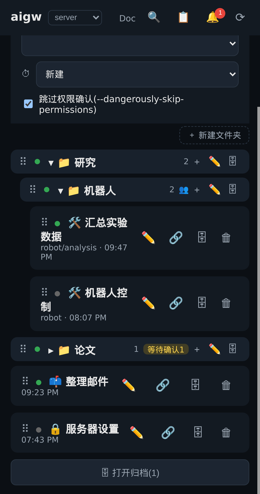
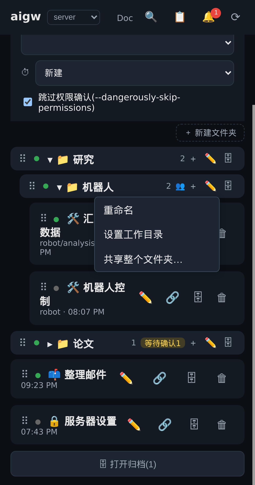
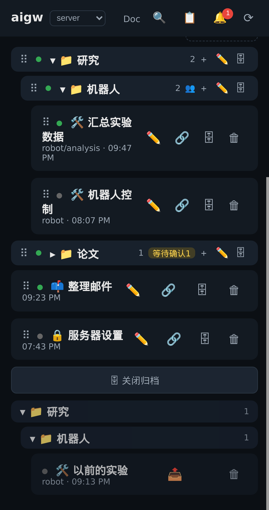
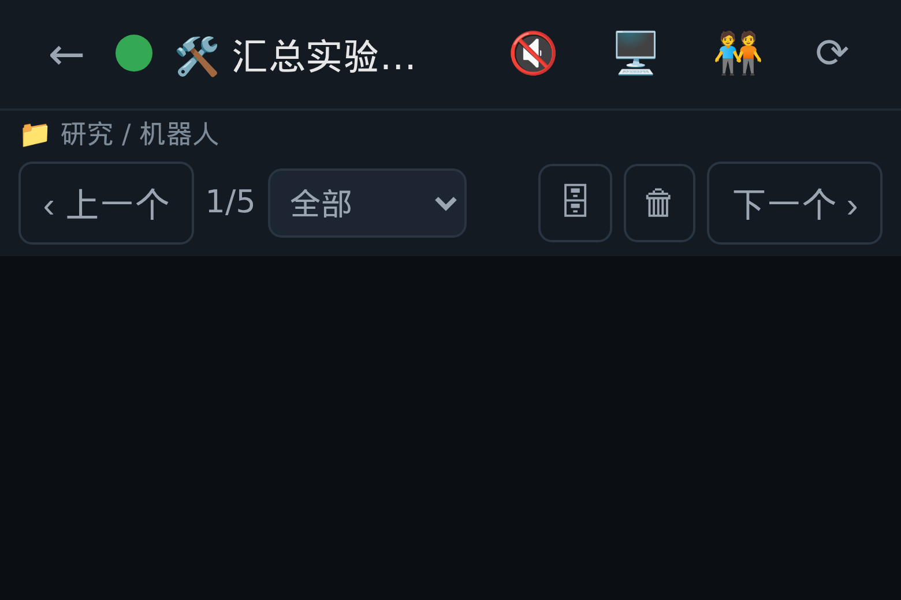
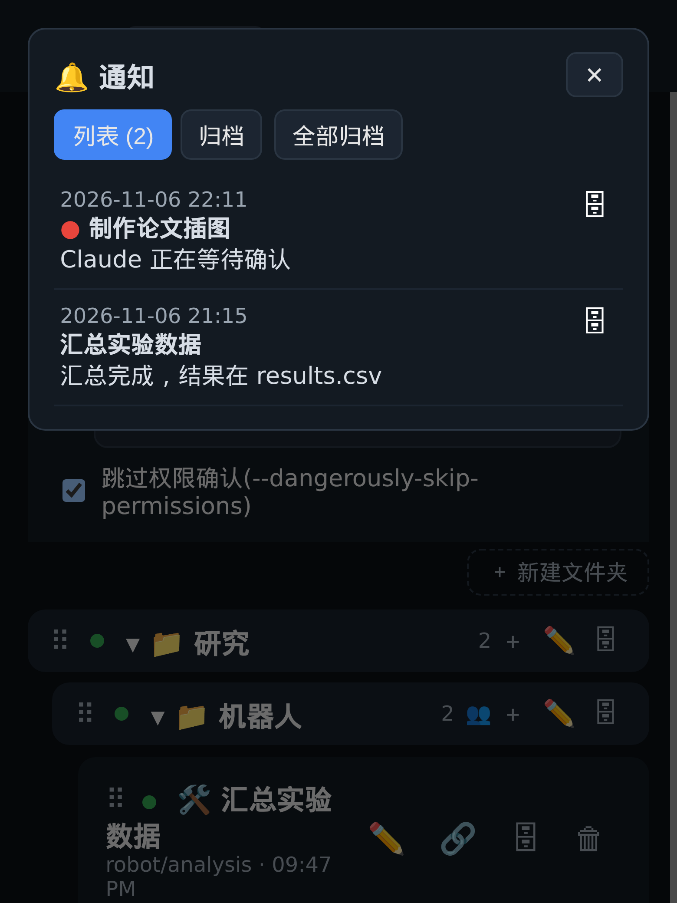
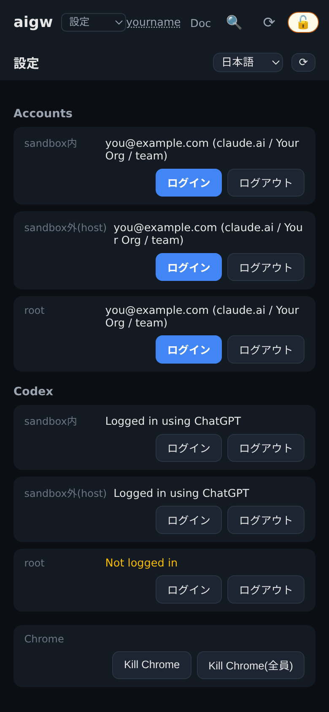
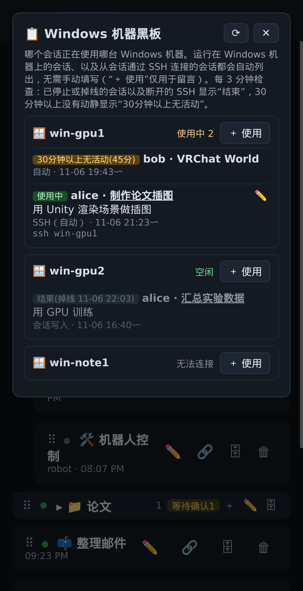

aigw 教程 进阶篇
本篇是基础篇的续篇。介绍会话增多时的整理方法（文件夹、巡览、通知）、与其他会话的连接、沙箱之外（Email、主机、root）以及其他机器的用法。
1. 用文件夹整理
会话可以归入文件夹。文件夹中还可以再建文件夹，层数没有限制。

- 创建：列表上方的“＋ 新建文件夹”。要在某个文件夹中创建时，点该文件夹那一行的 ＋ →“在此新建文件夹”。
- 放入、移动：按住行左侧的 ⠿ 拖动，在文件夹的行上松开即可放入其中。在行与行之间松开，则排序到该位置。也可以把整个文件夹放入另一个文件夹。
- 展开、收起：点按文件夹的行。行上的数字是其中会话的数量，“等待确认”是其中正在等待回复的会话数量。
- 批量停止、继续：点按文件夹行上的 ●，会停止其中所有正在运行的会话。停止后点按灰色的 ●，会把当时停止的会话一起继续。
- 归档：用 🗄 归档整个文件夹。只能删除空文件夹（🗑）。
工作目录

可以为文件夹指定一个工作目录（服务器上的位置）。用 ✏️ →“设置工作目录”，写成 robot 这样。
- 位置用相对路径写。对沙箱会话来说是
~/sandhome/robot，对主机 shell 来说是自己主目录下，对 root shell 来说是/root下的同名位置。 - 点该文件夹的 ＋ →“在此文件夹新建会话”，列表上方的创建栏会显示“📁 机器人 · 工作目录 ~/robot”。按开始后，会话会在该位置启动，并放入该文件夹。如果该位置不存在，会自动创建。
- 无论从哪里创建，在工作目录中启动的新会话都会自动放入该文件夹。
- 没有填写工作目录的文件夹，会使用上级文件夹的工作目录。
按文件夹共享
用 ✏️ →“共享整个文件夹…”，可以共享其中的所有会话（包括子文件夹以及之后放入的会话）。对象以及“只读/协作”的选择方法，与单个会话的共享（基础篇）相同。root shell 会变为只读，Email 不会按文件夹共享。正在共享的文件夹会带有 👥。
归档中的文件夹

在文件夹中归档的会话，在“🗄 打开归档”里也会排在同一文件夹下。用 📤 恢复后会回到原来的文件夹。整个文件夹归档的，可以用该文件夹行上的 📤 一起恢复。
2. 等待确认与巡览
Claude 正在等待回复（工作已完成、请求批准计划等）的会话，会在列表中名称旁边带有黄色的“等待确认”。

- 在聊天界面点按名称部分，会打开巡览栏（再点按一次关闭）。
- 用 ‹ 上一个、下一个 › 可以不返回列表，直接切换到前后的会话。顺序与列表（包括文件夹内）一致。
- 在选择栏中可以选择“全部、运行中、等待确认”。选择“等待确认”后，就可以只依次查看正在等待回复的会话。
- 用 🗄 归档当前会话，用 🗑 删除对话记录，然后直接转到下一个。
- 栏上方的小字表示该会话位于列表中的哪个文件夹。
3. 通知列表

- 用界面上方的 🔔 打开至今收到的通知（推送）列表。红色数字是尚未查看的数量。
- 每条都显示日期时间、会话名称和正文。点按即可打开该会话。
- 在列表中显示过的就算已查看。用 🗄 归档一条，用“全部归档”一起归档。
- 已处理完的会自动移到归档：通知之后自己向该会话发送了内容，或者会话已结束、已归档、已删除，满足任一条件即可。原因会显示在归档栏中。
4. 连接会话
用列表中的 🔗，可以把两个会话（例如沙箱中的 Claude 和主机上的 Claude）连接起来。连接后，只有当一方的 Claude 执行 talkto "…" 时，那段文字才会送到对方的输入框。并不会自动转发所有内容。用法 Claude 自己可以通过 talkto --help 查到。
5. 沙箱、主机、root、Email 的区别
创建栏中的类型区别在于“在哪里运行”。平时只用沙箱（Claude、Codex、Shell(沙箱内)）。
| 类型（创建栏中的显示） | 运行位置 | 能看到的内容 | 通行密钥 | 用途 |
|---|---|---|---|---|
| Claude / Codex / Shell(沙箱内) | 沙箱：自己专属的容器 | 只有 ~/sandhome | 不需要 | 所有日常开发 |
| Email 信箱：与沙箱分开的另一个容器（仅限已配置的服务器） | 只有 ~/mailbox | 🔑 主机级别 | 邮件、个人信息等不想放在开发用沙箱中的东西 | |
| Shell(沙箱外,主机) | 服务器本身，以自己的权限 | 真正的主目录（~/）等 | 🔑 主机级别 | 需要操作容器外的文件时 |
| Shell(root,沙箱外) | 服务器本身，以 root 身份 | 全部 | 🔓 root 级别 | 管理服务器。仅对获许可的人显示 |
- 为什么平时用沙箱：在容器中，无论 Claude 执行什么，都到达不了自己
~/sandhome之外。所以即使跳过权限确认也是安全的。 - 为什么要把 Email 信箱分开：在沙箱中，通过
npm install装进来的他人的软件包也会运行。如果把邮件之类的信息放在那里，这些软件包也能读到。Email 信箱是沙箱看不到的另一个容器，对话记录也保存在~/mailbox一侧。 - 在机器选择中选择通过 ssh 连接的其他机器，就可以使用那台机器上的 Claude 或 shell。它与沙箱不共享文件（第 9 章）。
- 在列表中，可以通过名称前的图标区分类型：🛠️ 沙箱、📫 Email、🏠 主机、🔒 root、💻 其他机器。
6. 设置界面与登录 Claude
第一次使用 Claude 之前，要在每个使用位置各登录一次 Claude。沙箱、主机、root、其他机器的登录信息是各自独立的。只有 Email 信箱在设置界面中没有对应的行，要在信箱中登录。

打开方法
在首页的机器选择（server 栏）中选择设置。返回时，在同一栏中重新选择 server（本服务器）。
登录步骤
- 按“Accounts”中沙箱内那一行（如果要在主机或其他机器上使用，就是相应那一行）的登录。会打开用于登录的聊天界面。
- 聊天中会显示一个 URL，点按后在浏览器中打开，用 Claude 账号授权。
- 复制显示的代码，粘贴到聊天输入框中并点执行。粘贴的代码不会显示在界面上，这是正常的。
- 会显示一行成功或失败的结果，用于登录的会话会自动消失。设置界面那一行显示出邮箱地址，就完成了。
- 该行显示“未登录”（黄色）的位置，那里的 Claude 无法运行。
- Codex 一栏也是同样的步骤（ChatGPT 账号）。
- 用标题旁边的 ⟳ 可以重新获取状态。
- 用标题旁边的选择栏可以更改显示语言（日本語、English、简体中文）。选择的语言会被保存，在其他设备上登录后也会相同。登录界面的下方也可以选择。
- 用最下方的👥 所有人的登录，可以查看本服务器上所有人在哪里登录了哪个 Claude 或 ChatGPT 账号（仅供查看）。root 的登录只对正在解锁 root 的人显示。
- 其上方的结束 Chrome是停止自己用的测试浏览器（有界面 Chrome）的按钮。变卡时可以按。下次使用时会自动重新启动。
7. Email 与通行密钥（钥匙）的注册
像 Email、主机、root 这样要到容器之外时，需要用通行密钥（由手机的指纹、面容识别或电脑的 PIN 保护的钥匙）解锁。这样即使 aigw 的登录被盗，没有你手边的设备也出不去。
注册通行密钥（首次一次）
- 从电脑用 SSH 登录服务器（基础篇 第 1 章）。对于只允许从内部网络 SSH 的服务器，要先进入内部网络。
ssh <ユーザー名>@<サーバー> aigw-passkey register - 会显示一个 URL。请在 5 分钟内，用想放置通行密钥的设备（平时使用 aigw 的手机等）的浏览器打开它。这个 URL 在外部也能打开（只有 SSH 需要内部网络）。
- 在“注册通行密钥”页面按注册通行密钥，用指纹、面容识别或 PIN 确认。
- 显示完成即可。想增加设备时，在那台设备上再执行一遍同样的步骤。
aigw-passkey list 查看，当前状态可以用 aigw-passkey status 查看。使用 Email

- 在创建栏中选择 Email（只有已配置的服务器才有）。文件夹从自己的
~/mailbox开始，可以和 Claude 一样选择子文件夹，或用＋新建。 - 按开始后，会弹出设备的通行密钥确认。用指纹等确认后，右上角出现 🔑 表示已解锁，会话随即启动。
- 仅限第一次 Email 会话，信箱中的 Claude 会要求登录。用 🖥️ 打开画面面板，用按键行的 ↑ ↓ ⏎ 选择登录方式（Claude 账号），打开出现的 URL 并授权，把显示的代码粘贴到输入框中点执行。接着如果出现是否跳过权限确认的确认，选择同意的那一项。第二次起不会再出现。
- 之后的用法与沙箱中的 Claude 相同。
~/mailbox一开始是空的，需要的工具（读取邮件的脚本等）请自己准备，或者请 Claude 准备。
- 解锁状态会持续到你锁定或经过 2 小时为止。
- 点按右上角的 🔑 可以立即锁定。锁定期间打开 Email 会话，会出现“🔒 … 解锁”的提示条，点按它即可解锁。
- 沙箱中的 Claude 看不到 Email 信箱。反过来，也请不要下指令把 Email 的内容带到沙箱中。
8. 成为 root 的步骤
root（服务器的管理员权限）只有管理员许可的人才能使用。途径有两种，都需要本人操作。
使用 aigw 的“Shell(root,沙箱外)”
- 请管理员帮忙。管理员在服务器上执行以下命令，并把显示的 URL 交给你。
sudo aigw-passkey register <ユーザー名> --tier root - 在 5 分钟内用自己设备的浏览器打开收到的 URL，按注册通行密钥。这就是 root 级别的通行密钥（也可以用于解锁主机和 Email）。
- 重新加载 aigw 后，创建栏中会出现 Shell(root,沙箱外)。选择它并按开始，用通行密钥确认后右上角会变为 🔓，root shell 随即打开。
- 要在 root shell 中使用 Claude，需要先在设置界面的 root 一行登录 Claude（第 6 章）。
通过 SSH 使用 sudo
在服务器上获准使用 sudo 的人，可以用 SSH 登录后使用 sudo。许可给谁由管理员决定。
9. 其他机器与 Windows 机器黑板
如果有通过 ssh 连接到服务器的其他机器（装有 GPU 的 Windows 机器等），它们会列在机器选择（server 栏）中。选择后，列表和创建栏会切换为那台机器的内容，可以在那台机器上运行 Claude 或 shell。连不上的机器（关机等）不会显示。
- 在 Windows 机器上，可以在创建栏中选择工作驱动器和文件夹（
C:、D:…）。也可以选择接着之前的对话。 - 用 🐚/🪟 切换，选择在没有画面的地方（🐚）运行，还是在已登录的桌面（🪟，运行带画面的应用时）上运行。
- 其他机器上的会话在列表中带有 💻。
Windows 机器黑板

Windows 机器由几个人共用，所以有一块黑板，可以看出“哪台机器正被谁的哪个会话使用”。用界面上方的 📋 打开。无论是人还是 Claude，使用前只要看一下黑板即可，不需要填写。
- 自动：在该 Windows 机器上运行的 aigw 会话会自动列出。
- SSH（自动）：在沙箱或主机的会话中用
ssh、scp、sftp、rsync连接 Windows 机器时，也会自动列出。连接结束后会变为“结束（SSH 已断开）”。 - 每 3 分钟检查一次，已停止或掉线的会话显示“结束”，聊天 30 分钟以上没有动静的显示“30分钟以上无活动”。
- 只有想留下要做的事的备注时，才需要用 ✏️ 补充，或用“＋ 使用”手写（手写条目会一直保留，直到自己“取消”）。在会话中可以用
aigw-board查看黑板。 - 使用前请先看黑板，如果有人在用，请和对方商量。
10. 遇到问题时
| 症状 | 处理方法 |
|---|---|
| 找不到会话 | 可能在文件夹中。点按文件夹的行展开。也有可能不小心把文件夹在另一个文件夹上松开，放进了里面。也看看归档中（第 1 章） |
| Email 或主机 shell 要求“解锁”而无法继续 | 确认是否注册了通行密钥、是否在这台设备上注册的（第 7 章）。如果出现了锁定中的提示条，点按它 |
| 名称变成了 🔒 | Email、主机、root 的会话在解锁前会隐藏名称。从列表上方的提示条解锁 |
| Claude 没有任何回复、要求登录 | 在设置界面确认该位置那一行是否显示“未登录”，然后登录（第 6 章） |
| 其他机器没有出现在机器选择中 | 连不上那台机器（电源、网络）。找管理员商量 |
| 想知道 Windows 机器是否有人在用 | 看 📋 黑板（第 9 章） |
| 通知太多 | 在 🔔 列表中点“全部归档”。已处理完的会自动移过去（第 3 章） |
| 不清楚基本操作 | 基础篇的“遇到问题时” |